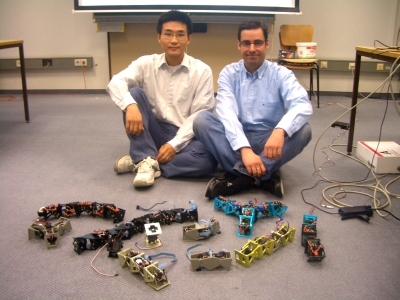
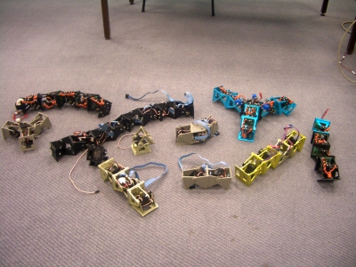
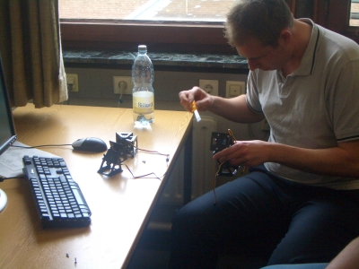
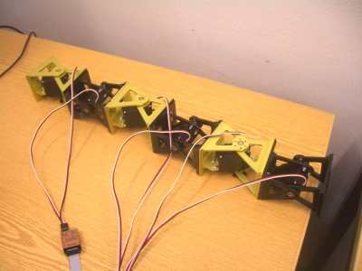

Desde el 14 al 20 de Junio he estado en el grupo TAMS de la Universidad de Hamburgo participando en un curso de robótica modular para los alumnos de la facultad de matemáticas, informática y ciencias, invitado por Houxiang Zhang.
Mi clase fue el Viernes, y me llevé a toda la flota de robots. Al juntarlos con los que tienen allí, formamos la primera granja de robots modulares 🙂

En esta foto se puede ver más de cerca algunos de los robots, formados por los dos tipos de módulos,
los Y1 y su versión en aluminio, los Cube-M.
Mi charla se tituló “Introduction to the locomotion of limbless modular robots” y
les enseñé cómo mover las serpientes modulares usando los osciladores sinusoidales.
Las transparencias de la presentación
están disponibles aquí.

Después de la charla, de 40 minutos, vinieron las prácticas. En esta foto se puede ver a uno de los estudiantes alemanes montando una serpiente robótica con conexionado de tipo cabeceo-viraje.

Y aquí está la estructura mecánica de la criatura usando los módulos Cube-M. Aunque los robots se pueden hacer autónomos, en este curso se conectan mediante un cable a una controladora y esta al PC, de manera que los estudiantes programan en el PC los algoritmos de locomoción.
Joer, que alegría! Como han crecido las serpientes!!!! Desde la primera vez que las ví en la Ponti, en aquellas Jornadas del Software Libre a ahora, parece que ha habido mucho curro! Nada, nada, como linupsero, ex-alumno y geek, ¡añadido quedas a mis feeds!
Que envidia lo de la reprap, y lo de los chupitos!!! Yo quiero!!
Por cierto en cuanto me pase por las Españas, me voy a pillar un Arduino, que tengo un par de ideas que quiero probar… ¿Te está gustando como plataforma?
Namáste-saludo!!